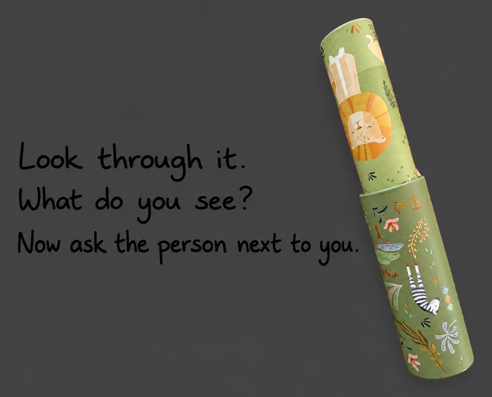

Finding North.
Hielke Gase

I decide to look through someone else’s kaleidoscope before I lead them.
How to read this portfolio
This portfolio follows the order of the minor: chapter 1, 2, 3 and 4. Inside each piece I use the compass. You enter where it is hardest and leave by North, because something has to be decided.
About this portfolio.
I am Hielke Gase, a second-year HRM student from Warns. I work as a shift supervisor at Plus Stavoren and I coach a youth football team. I came to this minor to learn how to manage people well, how to respect cultures and how to help people get the most out of themselves (see 1.3). This minor made me think a lot about why I do what I do. Some assignments, like the serious games, felt strange while we were doing them. Only when I started to reflect did I understand them. The compass gave that reflection a shape: in every piece I start where it is hardest and end at North, with what I have decided. My North is that I look through someone else’s kaleidoscope before I lead them.
Point Meaning Question it asks
East
The situation
What does this situation actually ask of me?
West
Wisdom
What do I know, and who or what did I learn it from?
South
Self-knowledge
Who am I when I act, and what do I tend to avoid?
North
What now?
What have I decided, and what will I do about it?
| No. | Piece | Read by | Status |
|---|---|---|---|
| 1.1 | The Moral Compass portfolio | Christine Fenech | Draft |
| 1.2 | Your personal pitch | Michiel Galama & Harmannus Huizenga | Draft |
| 1.3 | Your learning question | Michiel Galama & Harmannus Huizenga | Draft |
| 1.4 | Reflection on the serious games | Michiel Galama & Harmannus Huizenga | Draft |
| 1.5 | Your 80,000 hours | Michiel Galama & Harmannus Huizenga | Draft, sources to check |
| 2.1 to 2.3 | Research project, reflection and poster | Jacqueline Rietveld & Folkert de Jong | 2.2 draft; 2.1 and 2.3 group work, added separately |
| 3.1 | Film night | Michiel Galama & Harmannus Huizenga | Draft |
| 3.2 | The crossing, or Alternative organisation | Michiel Galama & Harmannus Huizenga | Draft |
| 3.3 | The exhibition in the church | Christine Fenech | Not in the portfolio |
| 4 | Reflections on the learning outcomes | Michiel Galama & Harmannus Huizenga | To do |
| Choice | Four choice assignments | to check | To do |
Hand-in Sunday 1 November 2026. Exhibition Monday 2 and Tuesday 3 November 2026.